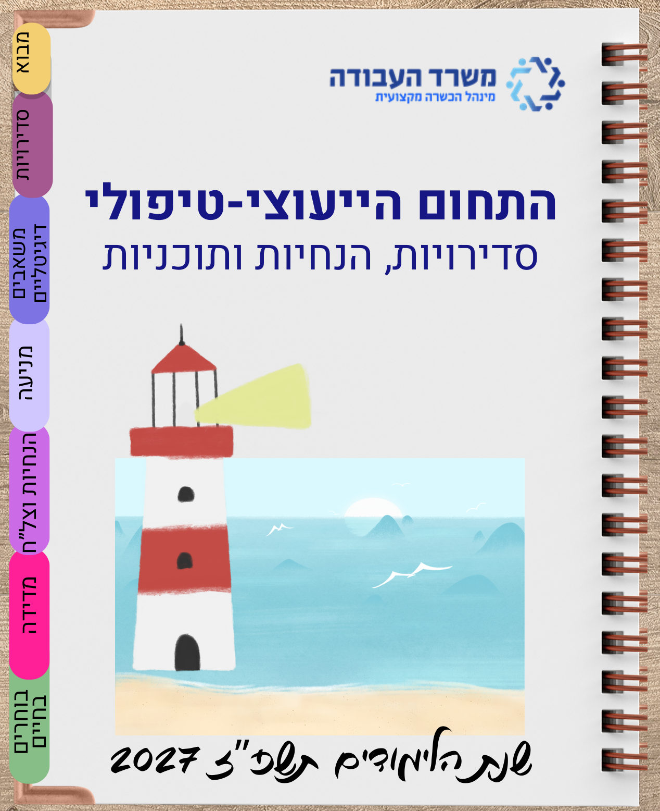

הבית של היועצות והצוותים הטיפוליים — ליווי רגשי, מניעת נשירה וכישורי חיים לחניכי המינהל.
 מהשטח · החינוך היוצר
מהשטח · החינוך היוצר
המצגת המלאה של התחום הייעוצי-טיפולי לשנת תשפ"ז — סדירויות העבודה, משאבים דיגיטליים, תוכניות מניעה, הנחיות וצל"ח, כלי מדידה ו"בוחרים בחיים". דפדפו עם החיצים או פתחו במסך מלא.

הערכה המלאה לצוות הייעוצי — שגרות ליווי, כלים ותרחישים.
מערכים לפי שכבה — זהות, תקשורת, גבולות, מוגנות ורשת.
התוכנית למניעת נשירה בחברה הערבית — איתור, מעקב והתערבות.
אוצר הכלים לפי חמשת אשכולות CASEL — מוכן להפעלה.
תוכניות ההעשרה וטיפוח הלומד — סל התוכניות המאוחד.
שאלוני אקלים ורווחה נפשית + כלי עיבוד מוכנים.